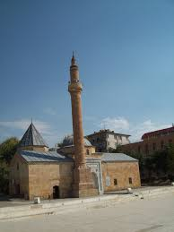
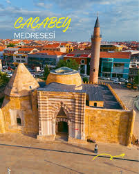

Anadolu'nun köklü tarihi içinde Kırşehir, manevi iklimiyle her zaman farklı bir yere sahip olmuştur. Geçmişten günümüze bu toprakları aydınlatan ve günümüzde Kırşehir'de medfun olan zatlar, şehrin sadece kültürel değil, aynı zamanda inanç turizmi açısından da cazibe merkezi olmasını sağlamıştır. Bu yazımızda, Kırşehir'in manevi mimarlarını ve ziyaret edilmesi gereken tarihi türbeleri inceliyoruz.
Ahi Evran Türbesi: Ahiliğin Başkenti
Kırşehir'de medfun olan zatlar listesinin en başında, şüphesiz esnaf teşkilatı olan Ahiliğin kurucusu Ahi Evran-ı Veli gelir. Ahlak, sanat ve misafirperverliği harmanlayan bu felsefe, Kırşehir'den tüm Anadolu'ya yayılmıştır. Kendi adını taşıyan cami ve türbesi, bugün şehrin en çok ziyaret edilen inanç noktasıdır.

Aşık Paşa: Türkçenin Manevi Kalesi
13. yüzyılın büyük düşünürü Aşık Paşa, döneminde Farsça ve Arapça revaçtayken eserlerini öz Türkçe ile vererek dilimize eşsiz bir hizmet etmiştir. Kırşehir'de bulunan ve mimari yapısıyla dikkat çeken Aşık Paşa Türbesi, Selçuklu dönemi mimarisinin en nadide örneklerinden biri olarak günümüze kadar ulaşmıştır.
Cacabey Medresesi ve Türbesi
Kırşehir'i adeta bir bilim merkezi haline getiren Cacabey, astronomi alanında dünyanın ilk gözlemevlerinden birini kurmuştur. İlim ve bilime olan katkılarıyla tanınan bu büyük devlet adamı, yaptırdığı eşsiz medresenin hemen yanında yer alan kendi türbesinde medfundur.

Kırşehir'in Manevi Mirası
Bu büyük şahsiyetler, Kırşehir'in kültürel kimliğini oluşturan temel yapı taşlarıdır. Kırşehir'de medfun olan zatlar, sadece tarih kitaplarında değil, bıraktıkları eserlerle günümüzde de varlıklarını sürdürmektedir. SEO projemiz hakkındaki diğer içerikler için Ana Sayfa bölümüne göz atabilirsiniz.